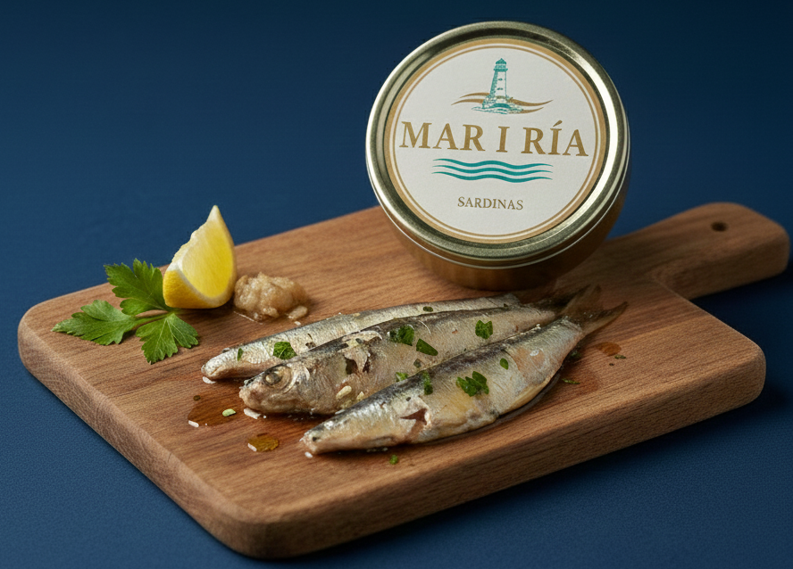
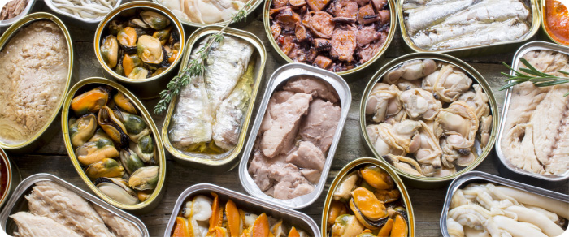

EL SABOR DEL MAR
"Conservado a la perfección"

CONSERVAS
Descubre una selección de conservas de las mejores marcas españolas. Productos gourmet y de primera calidad para disfrutar del mejor pescado y marisco en lata. Si eres un particular o tienes un negocio, te enviamos lo mejor de mar a donde nos pidas.
